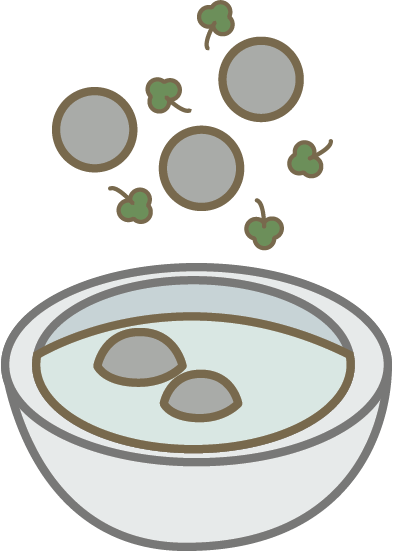

貢丸湯
MEATBALL SOUP
The meatlballs in the soups are technically meatballs but very different to the Western ones that we are used to. This kind of meatball are made with meat that has been blended into a paste. These meatballs are super popular in Taiwan and are often heavily seasoned with pepper to give it a spicy taste. One popular way of serving it is with soup. The soup is often very light and often served with Taiwanese parsely.